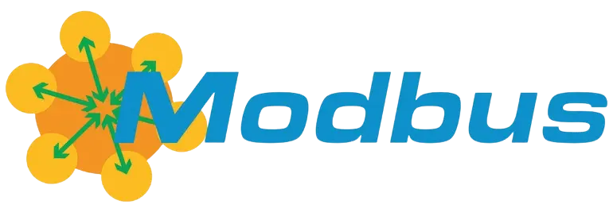
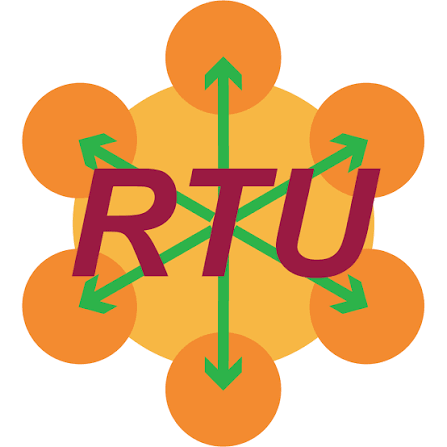
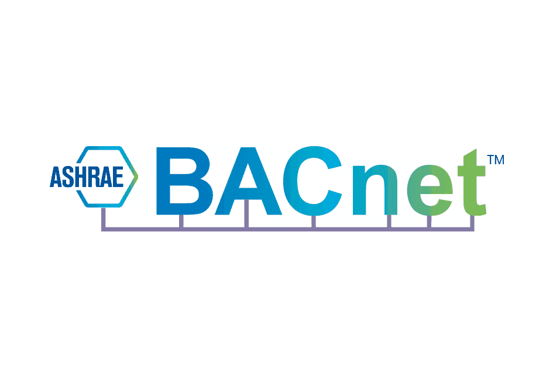
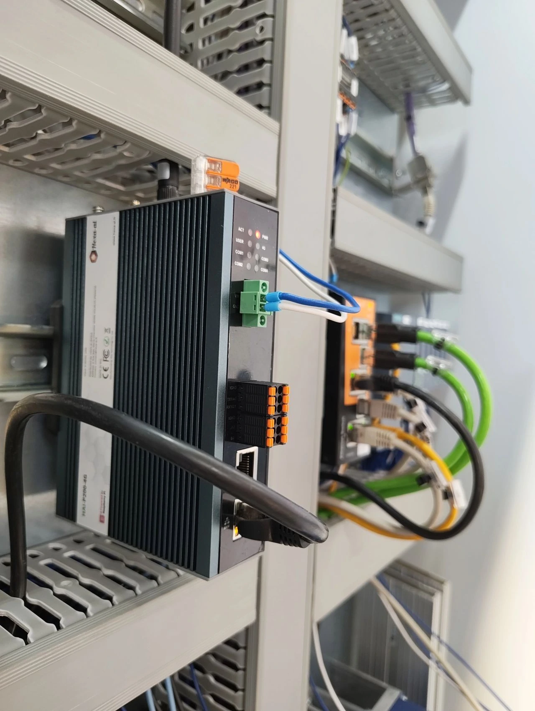

The VPN headache
Traditional industrial VPNs need firewall rules, a public IP, a server to maintain — and they lock you into one vendor.
Traditional industrial VPNs need firewall rules, a public IP, a server to maintain — and they lock you into one vendor.
A fault fires, and someone has to reconstruct what happened before it: phone calls, exports, spreadsheets. Time goes into investigating, not repairing.
Custom scripts, config files edited by hand, dashboards built by hand: monitoring should no longer require developer skills.
Days of configuration turned into minutes of installation.
Hover or click a band to see the real interface
Six inputs configured from the same web interface, with no intermediate gateway — and always read-only.

Holding & input registers, coils, discrete inputs. 17 data types, 16/32/64-bit byte order, scale and unit per variable.

RS232 / RS485 on the four terminal-block ports through the built-in RTU→TCP gateway. 1200 to 115200 baud, 8N1 by default.
Reads data blocks on S7-300/400/1200/1500. On 1200/1500: PUT/GET enabled and non-optimised DB access required.
Built-in node browser; anonymous, username or certificate auth, with client certificate generation from the interface.

Who-Is discovery and network scanning; reads analog, binary and multi-state objects (present-value).
TCP client, TCP server or UDP, with talker filtering. Listen mode shows the live stream; one click turns a field into a variable.
Anything a Node-RED flow can read becomes a historised variable: external APIs, exotic sensors, in-house formats.
Outbound MQTT and HTTPS JSON webhooks with bearer tokens: your data reaches your SaaS, SCADA or ERP, with failed messages replayed.
PLCs & platforms connected
Nothing in the box is vendor-specific: any device that speaks Modbus, S7, OPC-UA, BACnet/IP or NMEA 0183 connects. And we program these platforms daily — it has been our core business from day one.
The HAI-P200-4G embeds Tailscale, a modern WireGuard-based VPN: one encrypted outbound connection, no public IP, no inbound rule to request.
The box polls your server outbound; you answer with a command. Update, reboot, system snapshot — straight through 4G, without a single inbound port.
Automatic failover Ethernet → Wi-Fi → 4G, continuously probed. The site stays reachable even when the plant network goes down.
Turn on the Wi-Fi hotspot and its captive portal: set the box up from a smartphone, QR code included, with no laptop or patch cable in the cabinet.
Signed software repository, version of your choice, rollback available. You decide when a machine changes version.
The whole chain runs inside the box. No mandatory cloud, no platform subscription.
Cyclic polling per device, adjustable rate (5 s by default). Unit, description and category are carried by the variable.
Embedded database on the box, partitioned by month, 30-day retention by default. History stays available without Internet; the industrial micro-SD extends capacity.
You designate the variable that identifies the batch: its transitions open and close batches automatically. One click reopens the history on the exact batch window.
Daily, weekly, or on batch closure: the e-mail carries the summary — statistics for your favourite variables, charts for the first five, CSV optional — and the same report is generated as a PDF, archived and readable from the interface.
The batch closes, the report leaves on its own. For a production shop, that is traceability nobody has to remember.
On every alarm the box compares the last 30 minutes of each measurement against its usual behaviour, and attaches the five that deviated most — with trend charts for the top three. The operator opens the mail and sees where to look instead of reconstructing the context afterwards.
Honestly: this is a statistical deviation analysis (z-score), not an oracle. It points at temporal correlations — what it saves is diagnosis time, not the cause it asserts.
Most gateways send an e-mail and consider the job done.
What happens when an alarm fires
Alarm fired — level 1 notified immediately.
No acknowledgement — moving to the next level.
Acknowledged during the call — the chain stops.
As a last resort the box calls and reads out the alarm with speech synthesis. Press 1 during the call to acknowledge. A voice-enabled SIM is required.
Level 1, retry, level 2: channels are chosen per person and per level. The chain stops at the first acknowledgement — SMS "OK", a keypad press, or the interface.
Minimum active time, cooldown between two sends, cap per time window. A chattering alarm does not wake the on-call engineer twenty times.
An application catalogue installs on the box in one click, with volume backup and restore.
Open a few read-only pages to your end customer — plus a link to their Grafana or Node-RED — without ever handing over administration.
Node-RED stays the universal escape hatch: external APIs, proprietary formats, business calculations. What it produces comes back as an ordinary historised variable.
Contrast, text size, keyboard navigation, reduced motion: the interface meets the accessibility requirements of public tenders.

The same box on every machine shipped: instant remote access, history ready when the customer calls, and a recurring service offer to sell.
The batch closes and the PDF leaves with its statistics and charts. Traceability by configuration, not by development.
Instrumented air handling units (temperature, CO₂, humidity) with data fed cleanly into the vendor's platform.
NMEA 0183 over TCP or UDP, position on a map, and local historisation that absorbs the dead zones: edge before cloud.
No, by design: acquisition is strictly read-only. No command is ever sent to your equipment, which makes the conversation with your security team far shorter.
In most cases, no: we read the variables already exposed (Modbus registers, S7 data blocks, OPC-UA nodes). On S7-1200/1500 you simply enable PUT/GET and turn off optimised access on the blocks being read.
No. Acquisition, historisation and visualisation run inside the box. You then decide what to republish, and to whom, over MQTT or a webhook.
Collection carries on: historisation is local and does not depend on Internet. Untransmitted data is replayed on reconnection, within the configured retention (30 days by default).
No. Everything goes out as an encrypted outbound connection: no public IP, no port forwarding, no inbound rule. With 4G the box can stay entirely off the corporate network.
On the state change of a boolean variable declared as an alarm — thresholds stay in your PLC, where they belong. The box adds debounce, escalation, acknowledgement and diagnostic context.
One test unit for next week, or a fleet for the year? Describe your need and we come back with a full quote — box, antennas, storage, power supply and the right options.
No salespeople: you talk directly to the engineer who will handle your project.